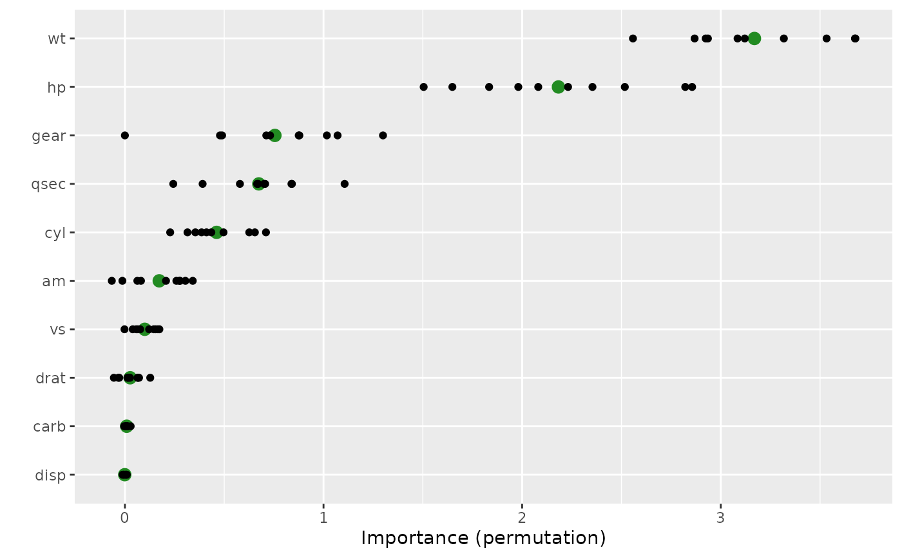

Compute variable importance scores for the predictors in a model.
Usage
vi(object, ...)
# Default S3 method
vi(
object,
method = c("model", "firm", "permute", "shap"),
feature_names = NULL,
abbreviate_feature_names = NULL,
sort = TRUE,
decreasing = TRUE,
scale = FALSE,
rank = FALSE,
...
)Arguments
- object
A fitted model object (e.g., a randomForest object) or an object that inherits from class
"vi".- ...
Additional optional arguments to be passed on to vi_model, vi_firm, vi_permute, or vi_shap; see their respective help pages for details.
- method
Character string specifying the type of variable importance (VI) to compute. Current options are:
"model"(the default), for model-specific VI scores (see vi_model for details)."firm", for variance-based VI scores (see vi_firm for details)."permute", for permutation-based VI scores (see vi_permute for details)."shap", for Shapley-based VI scores (see vi_shap for details).
- feature_names
Character string giving the names of the predictor variables (i.e., features) of interest.
- abbreviate_feature_names
Integer specifying the length at which to abbreviate feature names. Default is
NULLwhich results in no abbreviation (i.e., the full name of each feature will be printed).- sort
Logical indicating whether or not to order the sort the variable importance scores. Default is
TRUE.- decreasing
Logical indicating whether or not the variable importance scores should be sorted in descending (
TRUE) or ascending (FALSE) order of importance. Default isTRUE.- scale
Logical indicating whether or not to scale the variable importance scores so that the largest is 100. Default is
FALSE.- rank
Logical indicating whether or not to rank the variable importance scores (i.e., convert to integer ranks). Default is
FALSE. Potentially useful when comparing variable importance scores across different models using different methods.
Value
A tidy data frame (i.e., a tibble object) with two columns:
Variable- the corresponding feature name;Importance- the associated importance, computed as the average change in performance after a random permutation (or permutations, ifnsim > 1) of the feature in question.
For lm/glm-like objects, whenever
method = "model", the sign (i.e., POS/NEG) of the original coefficient is
also included in a column called Sign.
If method = "permute" and nsim > 1, then an additional column (StDev)
containing the standard deviation of the individual permutation scores for
each feature is also returned; this helps assess the stability/variation of
the individual permutation importance for each feature.
Examples
#
# A projection pursuit regression example
#
# Load the sample data
data(mtcars)
# Fit a projection pursuit regression model
mtcars.ppr <- ppr(mpg ~ ., data = mtcars, nterms = 1)
# Prediction wrapper that tells vi() how to obtain new predictions from your
# fitted model
pfun <- function(object, newdata) predict(object, newdata = newdata)
# Compute permutation-based variable importance scores
set.seed(1434) # for reproducibility
(vis <- vi(mtcars.ppr, method = "permute", target = "mpg", nsim = 10,
metric = "rmse", pred_wrapper = pfun, train = mtcars))
#> # A tibble: 10 × 3
#> Variable Importance StDev
#> <chr> <dbl> <dbl>
#> 1 wt 3.17 0.374
#> 2 hp 2.18 0.462
#> 3 gear 0.755 0.367
#> 4 qsec 0.674 0.240
#> 5 cyl 0.462 0.158
#> 6 am 0.173 0.144
#> 7 vs 0.0999 0.0605
#> 8 drat 0.0265 0.0564
#> 9 carb 0.00898 0.00885
#> 10 disp -0.000824 0.00744
# Plot variable importance scores
vip(vis, include_type = TRUE, all_permutations = TRUE,
geom = "point", aesthetics = list(color = "forestgreen", size = 3))

#
# A binary classification example
#
if (FALSE) { # \dontrun{
library(rpart) # for classification and regression trees
# Load Wisconsin breast cancer data; see ?mlbench::BreastCancer for details
data(BreastCancer, package = "mlbench")
bc <- subset(BreastCancer, select = -Id) # for brevity
# Fit a standard classification tree
set.seed(1032) # for reproducibility
tree <- rpart(Class ~ ., data = bc, cp = 0)
# Prune using 1-SE rule (e.g., use `plotcp(tree)` for guidance)
cp <- tree$cptable
cp <- cp[cp[, "nsplit"] == 2L, "CP"]
tree2 <- prune(tree, cp = cp) # tree with three splits
# Default tree-based VIP
vip(tree2)
# Computing permutation importance requires a prediction wrapper. For
# classification, the return value depends on the chosen metric; see
# `?vip::vi_permute` for details.
pfun <- function(object, newdata) {
# Need vector of predicted class probabilities when using log-loss metric
predict(object, newdata = newdata, type = "prob")[, "malignant"]
}
# Permutation-based importance (note that only the predictors that show up
# in the final tree have non-zero importance)
set.seed(1046) # for reproducibility
vi(tree2, method = "permute", nsim = 10, target = "Class", train = bc,
metric = "logloss", pred_wrapper = pfun, reference_class = "malignant")
# Equivalent (but not sorted)
set.seed(1046) # for reproducibility
vi_permute(tree2, nsim = 10, target = "Class", metric = "logloss",
pred_wrapper = pfun, reference_class = "malignant")
} # }